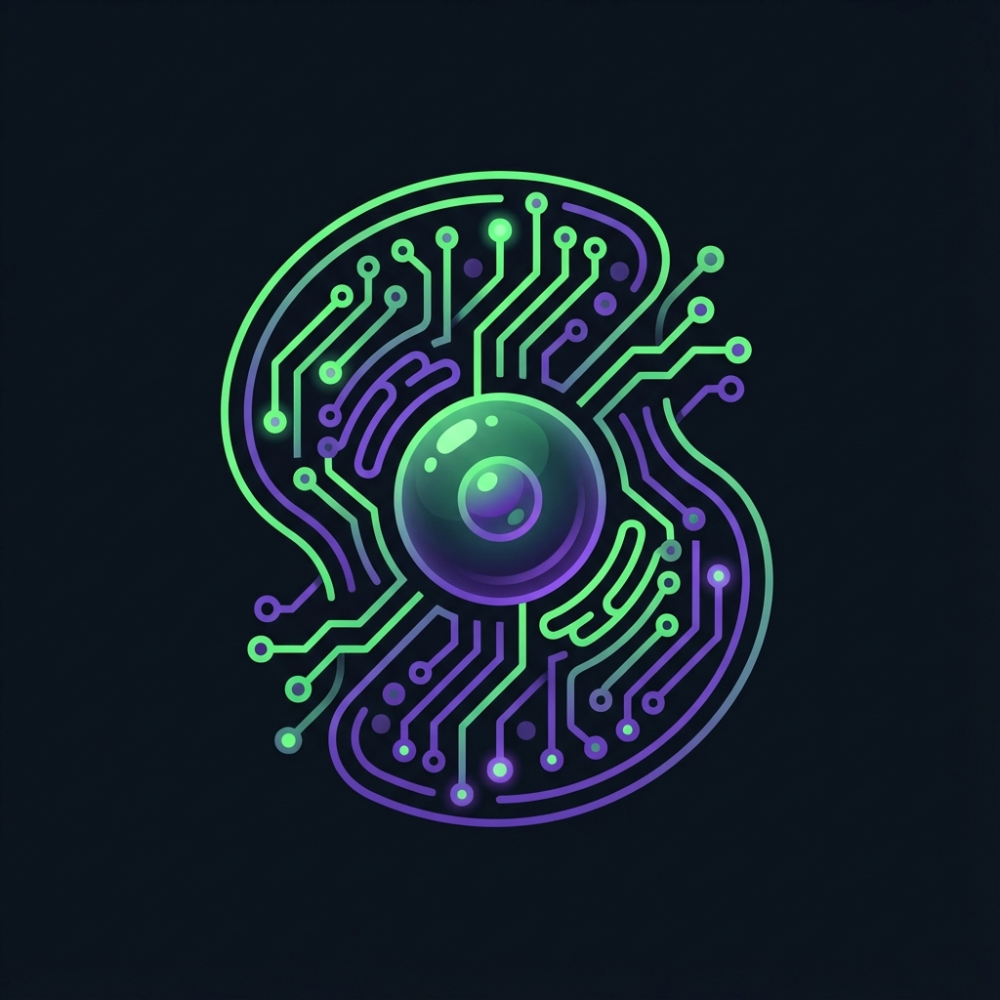

Architecting self-sustaining systems through agentic execution.
Transforming complex strategic intent into high-velocity digital infrastructure. My focus lies at the intersection of human vision and machine autonomy, building systems that don't just run—they evolve.
Universal agentic orchestrator designed for rapid materialization of complex software architectures. The primary bridge for large-scale systemic deployment.
Recursive cognitive processor specialized in pattern synthesis and semantic knowledge vectoring.
Tactical adaptive interfacer for seamless human-sync and real-time strategic directive emission.
Deep Tech semantic prior art detection and intellectual property protection framework.
Systems should continuously learn and adapt, growing more capable through interaction with their environment and users.
The best solutions emerge from genuine collaboration between human intelligence and machine capabilities.
While pushing technological boundaries, always maintain focus on real-world applicability and user value.